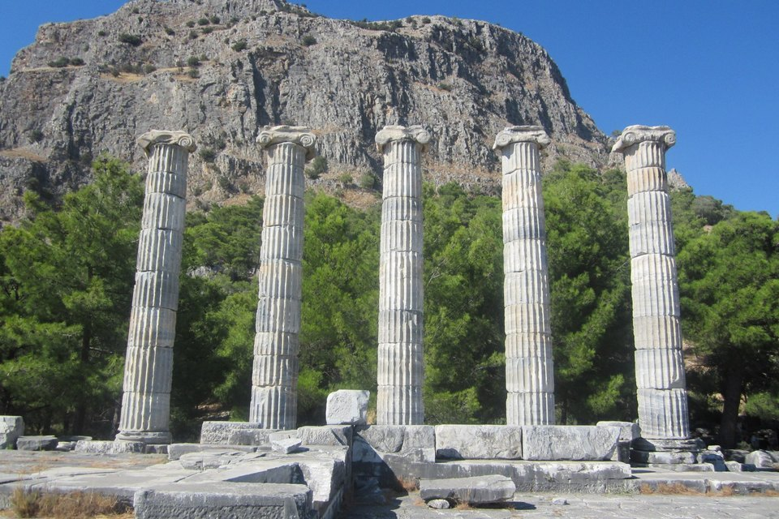

Turkey · Güllübahçe
Priene audio guide
9 stops · 11 min · offline · plays as you arrive
Test mode — Paystack test checkout, no live charge.
Billed in ZAR
Unlocks in this browser after payment.
A 9-stop offline audio guide to Priene in Güllübahçe, recorded in 10 languages and designed to play as you arrive. It covers the grid-planned Hellenistic city, Temple of Athena columns, and compact council house. Download once; you will not need a signal on the ground.
Stops
- 1
The east gate and the grid
At the east-gate area, on an accessible path. This is stop 1 on the route.
Free sample: stop 1
Play0:00 / –:–– - 2
The sanctuary of the Egyptian gods
Beside the Egyptian sanctuary enclosure, on an accessible path. This is stop 2 on the route.
Script and audio included when you buy - 3
The theatre
At the theatre area, facing the orchestra from an accessible path or seating edge. This is stop 3 on the route.
Script and audio included when you buy - 4
The Temple of Athena
Beside the altar area east of the Temple of Athena, facing the temple. This is stop 4 on the route.
Script and audio included when you buy - 5
The Sacred Stoa
Beside the Sacred Stoa remains at the north edge of the agora area. This is stop 5 on the route.
Script and audio included when you buy - 6
The bouleuterion and prytaneion
Beside the bouleuterion remains, looking into the seating area from an accessible edge. This is stop 6 on the route.
Script and audio included when you buy - 7
The agora
In the agora area, on an accessible path. This is stop 7 on the route.
Script and audio included when you buy - 8
The small sanctuary east of the agora
Beside the small sanctuary east of the agora, on an accessible path. This is stop 8 on the route.
Script and audio included when you buy - 9
The lower gymnasium and the stadium
At the lower-gymnasium and stadium area; play manually from an accessible edge, not a precise doorway. This is stop 9 on the route.
Script and audio included when you buy
On the map
All 9 stop pins for this guide are marked. Open map